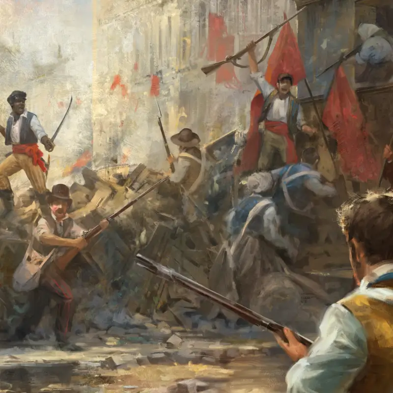
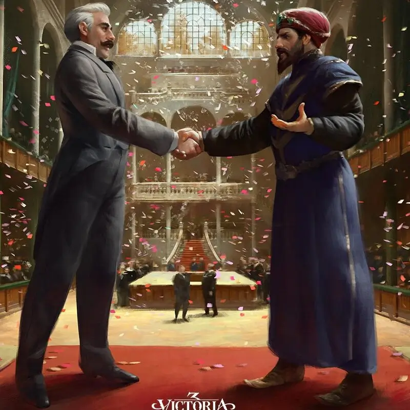

INFORMACION DEL JUEGO
Victoria 3 es un juego complejo y desafiante que ofrece una gran cantidad de profundidad y opciones.
Los jugadores pueden administrar su economía, su ejército, su política y su sociedad, y pueden
interactuar con otros países a través de la diplomacia, el comercio y la guerra.
Economía: crecimiento, prosperidad y defensa
Los jugadores deben administrar la economía de su país para garantizar el crecimiento, la prosperidad
y la defensa. Para ello, deben controlar los recursos naturales, el comercio internacional, la
producción industrial y la inversión en infraestructura.
Militar: defensa, expansión y diplomacia

El ejército es la principal herramienta de defensa de un país, y también puede usarse para conquistar
nuevos territorios. La diplomacia es una herramienta importante para evitar la guerra, y los
jugadores pueden negociar tratados y formar alianzas
Política: orden, estabilidad y progreso

Se deben lidiar con cuestiones como la ideología, la estructura gubernamental, los derechos civiles y
la desigualdad social. El orden es esencial para que un país funcione, y la estabilidad es
importante para que un país prospere.
Sociedad: calidad de vida, cultura y diversidad
La calidad de vida es importante para que los ciudadanos sean productivos y felices, y la cultura es
una expresión de la identidad de un país. La diversidad es una característica importante de
cualquier sociedad.